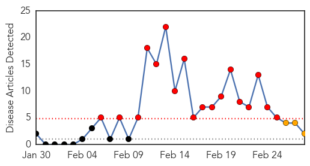
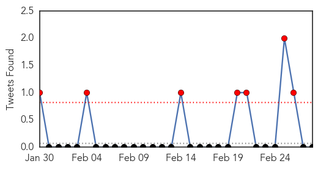
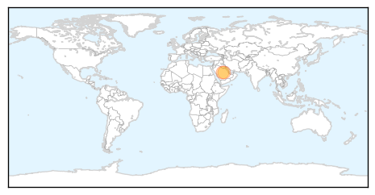
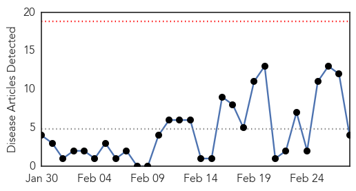
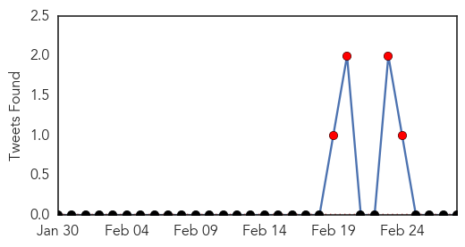
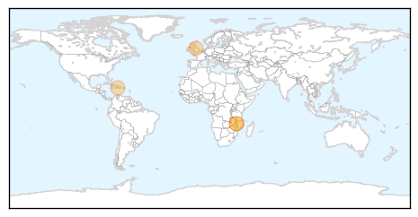

MERS
30-Day Web Trend
18 alerts, 3 warnings

30-Day Twitter Trend
7 alerts, 0 warnings

Article Locations
Article Confidences

Top Articles:
Top Tweets:
-
No tweets found for Feb 28, 2015
Cholera
30-Day Web Trend
0 alerts, 0 warnings

30-Day Twitter Trend
4 alerts, 0 warnings

Article Locations
Article Confidences

Top Articles:
- 0.999
- Humanitarian community must move quickly to halt cholera spread in Malawi UN
- 0.999
- Humanitarian community must move quickly to halt cholera spread in Malawi – UN
- 0.997
- Cholera outbreak in Malawi raises concerns of a large-scale spread: UNICEF
- 0.990
- HAITIAN-TRUTH.ORG Proud to be Haiti's most informative NEWS site
Top Tweets:
-
No tweets found for Feb 28, 2015